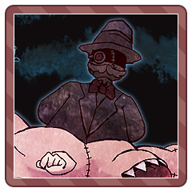
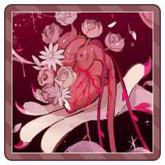
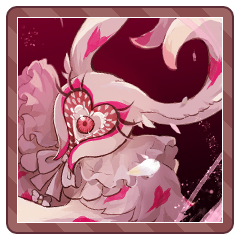
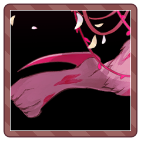

キャラクター紹介
GM
それじゃあ、地の分でよいので、軽くご紹介していただこうかな～とおもいます。
GM
リリアンお嬢様から。大体こんな子ですよ～というのをよろしくお願いします。
リリアン
元いた世界では地方貴族の娘で、美しく才能ある姉兄に囲まれたいまいち冴えない末の子です。
リリアン
とはいえ女なのでそれが評価されることもなく。
リリアン
このまま修道院に行くのだろうと思っていたところ、何の気まぐれか求婚してきた男性がいまして。
リリアン
この人のために尽くしていこうと思っていたところ、結婚を遂げる前に堕落の国へと来てしまいました。
リリアン
愛する人のために、何がなんでも元の世界に戻りたいと思っています。
リリアン
真実の愛が胸にあるので、浮ついた毒には絶対負けないです。
GM
よろしくおねがいします。負けないで……いや……負け……いや……………………
ゆきな
自由奔放、いつもポジティブな陽キャ。
これといった重い過去もありません。
ゆきな
なににも縛られない、なにも縛れない。
堕落の国でも、明るく暮らしています。
ゆきな
けれど、雪女は人を愛してはいけない。そんな伝説があります。
ゆきな
もし、恋の毒にかかったら、いったいどうなってしまうのでしょう。
ゆきな
そんなかんじのキャラです。よろしくおねがいします！
GM
よろしくお願いします！
かわいいね……こっから毒にかかったらどう切り替わっちゃうのか……
GM
最後にノエルくん？ ノエルちゃん？ どちらかしら！よろしくお願いします！
ノエル
ノエルは人形師のおじいちゃんの家で人形たちと静かに暮らしていました。彼が祖父に引き取られた理由は、父親からの虐待によるものです。
ノエル
おじいちゃんは優しく、人形たちは自分のことを傷つけない…そんなおうちで平穏に暮らしていきたいな…と思っていたところ、堕落の国に堕ちました。
ノエル
恋の毒にかかったとしても人形以外愛せるわけないと信じています。人間はこわいので。
GM
三者三様の恋しちゃダメなやつ、磨いてきましたね。
GM
その毒、見守ることしかできないんですけど……頑張っていきましょう。
GM
それでは、これよりセッションをはじめていきましょう。どうぞよろしくおねがいします！
GM
むかしむかしあるところに、堕ちた世界がありました。
GM
たそがれ色の空に汚水の海。枯れた草木に荒れた土地。飢えた人々に荒れ狂う亡者たち。
GM
かつては『不思議の国』と呼ばれたステキな世界は、少女アリスが消えたその日から『堕落の国』と化してしまったそうです。
GM
本日の主役は、そんな最低の地を旅する少年少女たち。
GM
彼らはこことは違う世界から、招待状を持ってこの世界にやってきました。
GM
堕落の国の人々は、彼らのような異世界人たちをこう呼びます。
チュートリアル
末裔
「あっ、あっ、救世主の方！ 少しお時間よろしいですか？」
末裔
「はい。南の、村をひとつ越えた道の先にですね、手強い亡者が出没するんです……」
末裔
「報酬を、はい、これだけお支払いしますので、ご討伐いだけませんかっ！？ 一人では不安？ 大丈夫です、他のももうお二人、救世主の方にお願いしてあるんです」
末裔
「……救世主が他にいるほうが不安？
まあ～それは、そうですが。ええ、きっと大丈夫ですよ。お優しそうな方でしたし」
GM
そんな風にして引き合わされた3人の救世主たちは、今……

継ぎ接ぎ侯爵
「ギャオオオオオオオオオオ！！！！！！」
継ぎ接ぎ侯爵
口についた無数の肉の塊が、宙に浮き上がり。
継ぎ接ぎ侯爵
そのてっぺんにシルクハットの怪しい紳士の亡霊！
継ぎ接ぎ侯爵
こんなものは……亡者に違いあるめえ！
GM
チュートリアルという星のもとに生まれたので、ＨＰは17しかありません。本当は51もあったのに。
リリアン
「そしてその呼び名はやめてくださいと言ったはずです！」
リリアン
横目にゆきなを睨み、また亡者へと視線を戻す。
リリアン
「よくありません……が抗議している場合でもありませんね」
リリアン
「とにかく亡者を退治してしまいましょう」
継ぎ接ぎ侯爵
「ギャオオォォォオ……！」
亡者はそんな三人のことをお構いナシに、無数の牙をガチガチと噛み合わせながら問答無用で襲い掛かってくる！
GM
さあ、クライマックスの裁判開廷だ！
法を投げ捨て、凶器を振るい、敵を斬り伏せ、猟奇と才覚と愛によって己の正しさを貫き通せ！
ラウンド1
GM
裁判のページの一番最初のほうからご覧くださいね。
GM
行動順は、1D6+【才覚】を全員で振って、高い方からの行動取ります。……と、その前に……
継ぎ接ぎ侯爵
さきほど貼った継ぎ接ぎ侯爵のデータ、横に配下というタブが見えるのがおわかりでしょうか。
継ぎ接ぎ侯爵
押すと、二体の配下を召抱えていることがわかります。
継ぎ接ぎ侯爵
そして、そいつら配下は、主のためになる技能をひとつずつ持っているんですね。
継ぎ接ぎ侯爵
そのうちの一つが『仕込』。5六ペンスまでのアイテムを今調達できます。
継ぎ接ぎ侯爵
『仕込』の効果で、継ぎ接ぎ侯爵は……
『日刻みの時計』を取り出した！
継ぎ接ぎ侯爵
これは、行動順に+2の修正をつけるアイテムです
継ぎ接ぎ侯爵
改めて、行動順を決めましょう。
才覚を持っている人は1D6+3、
それ以外の人は1D6を振ることになるでしょう。
継ぎ接ぎ侯爵
継ぎ接ぎ侯爵は才覚はありませんが、この日刻みの時計を即使い、1D6+2で振ります。
継ぎ接ぎ侯爵
1d+2 いい時計だろう！！
DiceBot :
(1D6+2) ＞ 5[5]+2 ＞ 7
リリアン
1d6+1 着慣れた衣装
DiceBot :
(1D6+1) ＞ 6[6]+1 ＞ 7
ゆきな
1D6+3 もーいっかい！
DiceBot :
(1D6+3) ＞ 6[6]+3 ＞ 9
ノエル
1D6
DiceBot
:
(1D6) ＞ 2
GM
拮抗していますね。同じ値の場合は振り直しになります。継ぎ接ぎ侯爵とリリアンさんのみ。
継ぎ接ぎ侯爵
1d+2
DiceBot :
(1D6+2) ＞ 6[6]+2 ＞ 8
リリアン
1d6+1
DiceBot :
(1D6+1) ＞ 3[3]+1 ＞ 4
GM
ゆきな＞継ぎ接ぎ＞リリアン＞ノエル の順になりました。
GM
お次は、この順番通りにカードを５枚引きます。ゆきなさんから早速どうぞ！
継ぎ接ぎ侯爵
続いて継ぎ接ぎ侯爵ですが……
キャラシートの真ん中あたりに『イカサマ』とかかれているのがわかるでしょうか。
継ぎ接ぎ侯爵
『トランプ兵』
手札の最大所持枚数が1枚増加する。
継ぎ接ぎ侯爵
亡者にはこのようなイカサマが三個あり、なぜかこいつは１つしかないのですが、このようにズルをしてきます。
GM
最後にノエルくん！Ｗクリックでカードをひき、もうＷクリックすると全体に公開されます。
GM
ここさえつかめればもう裁判を制したも同然です。
GM
では、順番に行動していきましょう。ゆきな→侯爵→リリアン→ノエル の順番で！
継ぎ接ぎ侯爵
肉のお顔がニヤニヤと笑い……
三人を1ラウンドの《衰弱》状態にします！
GM
この世界の不調はウルトラ強く、《衰弱》は受けるダメージが2点も増えます。
GM
尚、補助動作なので判定がいらず……妨害はできません！
GM
アイコンの背景が青いのは『補助技能』といい、『主動作』の前にかけられるんですね。
GM
これを組み合わせて強い主動作でダメージを与えていくって寸法よ……くく！
GM
というわけで、メインの主動作はこれ！『女王命令！』
GM
これは二体にダメージを与えられる、亡者の最強技能です。
GM
対象をリリアン、ゆきなにして、それぞれに判定します。妨害を入れるならココ！
継ぎ接ぎ侯爵
妨害……背景が緑色の技能は割り込みといい、書かれてるタイミングで割り込むことができるぜ！
継ぎ接ぎ侯爵
妨害は判定の達成値を高めて、相手の行動を失敗しやすくするぜ！
GM
もちろん、カードを捨てれば精確（自身の判定値ＵＰ）もできちゃいます。
ゆきな
1D6
DiceBot
:
(1D6) ＞ 5
ゆきな
1D6+5+3
DiceBot
: (1D6+5+3) ＞ 5[5]+5+3 ＞ 13
GM
判定は2D6なので、もう一個ダイスをふりたしていいですよ
ゆきな
1d6
DiceBot
:
(1D6) ＞ 4
GM
これにより、継ぎ接ぎ侯爵はリリアンへの女王命令を、2D6+2で18以上出さないと成功できません。
GM
六面ダイスを二個振って16出ればいい？できらあ！
継ぎ接ぎ侯爵
2d+2>=18
DiceBot
: (2D6+2>=18) ＞ 6[1,5]+2 ＞ 8 ＞ 失敗
GM
では、ゆきなさんは精確と妨害のカードを捨てていただきましょう（当裁判はカードを捨てることで技能を発動していくカードバトルシステムです）
GM
そして、女王命令の対象は二体……今度はゆきなさんへといきます。
ゆきな
2d6+1 多彩な凶器
DiceBot :
(2D6+1) ＞ 9[6,3]+1 ＞ 10
GM
一応、ゆきなさんは器用でカードを捨てれば、更に達成値を高めることもできますが、どうしますか？
継ぎ接ぎ侯爵
達成値を底上げする『万能』があったの忘れてました。
2d+3で判定します。
継ぎ接ぎ侯爵
2d+3>=13
DiceBot
: (2D6+3>=13) ＞ 3[2,1]+3 ＞ 6 ＞ 失敗
継ぎ接ぎ侯爵
2,1じゃとどかないなあ～！失敗です
GM
女王命令は全失敗！才覚のキャラクターが妨害をすれば、このように一方的に敵の攻撃を防ぐことができます。
GM
ただしそれは妨害が攻撃分手元にあるときだけ！
GM
最後に、継ぎ接ぎ侯爵は『疑り鳩』を使用します。
これは攻撃終了時に割り込み、全員にちょっとだけダメージを与える亡者技能です。
継ぎ接ぎ侯爵
2d+3>=7 判定！
DiceBot :
(2D6+3>=7) ＞ 3[1,2]+3 ＞ 6 ＞ 失敗
継ぎ接ぎ侯爵
めちゃくちゃ言ってるのは一億も承知ですが～！
継ぎ接ぎ侯爵
勝ったときに価値5までの小道具あげるので、
継ぎ接ぎ侯爵
ゆきなちゃんのその幸運、今ここで使ってくれませんか！！？
継ぎ接ぎ侯爵
ありがとうございます。出目が地を這っててすみません
継ぎ接ぎ侯爵
では、侯爵は帽子から価値5までの小道具をぽろっと落としながら振り直します。あとで拾おうね。
継ぎ接ぎ侯爵
2d+3>=7
DiceBot :
(2D6+3>=7) ＞ 6[3,3]+3 ＞ 9 ＞ 成功
継ぎ接ぎ侯爵
ふう！これで全員に2点。衰弱が乗って4点のダメージが入るわけです。
GM
誰かがダメージを受けるタイミングで、きみは『防壁』を使って庇うことができます。
GM
誰か、というのは自分でもＯＫ。庇ったら、そのぶんダメージを減らすこともできます。
GM
ですので、誰かがダメージを受けて倒れそう！とか、ここはＨＰ温存してほしいな……というときは、ダメージを受ける前に『防壁』を使いましょう。
ノエル
HP一番低いゆきなちゃんをかばっておくのがよさげなのかな
GM
ダメージ蓄積していつの間にかＨＰが1に……というの、才覚の人はありがちなので
GM
防壁を使う場合は、宣言して、防壁に対応する数字（今回は♦の4）のカードを捨て札にポイしてくださいね。
GM
そして、判定をします。
2d6+3>=7 となります。
この3は【愛】の値ですね。
ノエル
2d6+3>=7
DiceBot :
(2D6+3>=7) ＞ 4[1,3]+3 ＞ 7 ＞ 成功
GM
防壁の効果で、疑り鳩の対象はリリアン・ノエル・ノエルとなりました。それぞれに4のダメージ。
GM
ノエルくんは防壁の効果で、内一発は5点軽減されます。
GM
が、このゲーム、基本的にどれだけダメージを減らしても0にはならないので……
GM
本来の4点と防壁1点、合計5点を受ける形になりますね。
[ リリアン ] HP : 18 → 14
[ ノエル ] HP : 21 → 16
GM
恐ろしい亡者の手番は終わりです。続いてリリアンさん、手番行動をどうぞ！
リリアン
2d6+3>=7 猟奇
DiceBot :
(2D6+3>=7) ＞ 4[2,2]+3 ＞ 7 ＞ 成功
リリアン
1d6+2+1+3+2 上質な凶器+殺意+鋭気+渾身
DiceBot :
(1D6+2+1+3+2) ＞ 4[4]+2+1+3+2 ＞ 12
GM
めちゃくちゃ痛い。継ぎ接ぎ侯爵のHPは残り5点です。
[ 継ぎ接ぎ侯爵 ] HP : 17 → 5
継ぎ接ぎ侯爵
「ボギャッ！！？」
無数の口が射抜かれ、瀕死寸前！
GM
ノエル君は今、祝福と回復のふたつの主動作が扱えますね。
GM
祝福は攻撃の威力アップ、回復は減ったＨＰの回復。どちらが使いたいですか？
GM
ちなみに臆病の置いてあるＫはハズレカードとなります。
ノエル
祝福使わなくてもリリアンちゃんなら行ける気がするので、回復…しとこうかな？
GM
ＯＫ！では、Ｊを捨ててさきほどと同じ判定……2d+3>=7をどうぞ！
ノエル
あ、そっか。ふたりいけるんだ…！ではHP減ってるふたりですね
ノエル
2d+3>=7
DiceBot :
(2D6+3>=7) ＞ 8[6,2]+3 ＞ 11 ＞ 成功
GM
はい、成功！では、回復量を決めましょう。1d6+3+1になるはずですね。愛と凶器の+1がつきます。
ノエル
1d6+3+1
DiceBot
: (1D6+3+1) ＞ 4[4]+3+1 ＞ 8
GM
回復量は8点。回復の技能は、この値を対象にすきなかんじに割り振る技能です。
GM
とりあえず重傷の自分を全快させて残りをリリアンちゃんに～、とか、均等に4点～とか、好きに決めちゃうことができますよ。どうしましょう？
[ リリアン ] HP : 14 → 18
[ ノエル ] HP : 16 → 20
GM
ほぼ全快ですね。亡者、1ダメージ与えたのみ。
GM
と、ここで1ラウンド目が終わりまして。ラウンドが終わったら、全員手札を好きに捨てることができます。
GM
捨てたら、その分5枚になるまでカードを引くと。
リリアン
そういえば衝撃でカードを捨ててもらうの忘れてましたね……
GM
捨ててください（カードを大事に抱えながら……）
GM
仕方あるめえ……では、侯爵は疑り鳩のカードだけ捨てます。
リリアン
捨てるものなし ターン越しのカードは持たない
GM
ここでカードを捨てるわかりやすいコツは、『装備技能はハズレだから捨てる』『主動作は1枚あれば十分』ぐらいですね。
ラウンド2
GM
またゆきなちゃんからカードを引いていきましょう！
GM
では、ゆきなちゃんから動いていただきましょう。
ゆきな
1D6 精確
DiceBot
: (1D6) ＞ 5
ゆきな
2d6+3+1+5>=7 才覚＋多彩な凶器 奪取
DiceBot :
(2D6+3+1+5>=7) ＞ 2[1,1]+3+1+5 ＞ 11 ＞ 成功
GM
ＰＣがファンブルをふると、
・失敗を受け入れてファンブル表を振る
・疵を抉って逆転して成功にする
のどちらかを選択しなければなりません
GM
ここでですね、今回はチュートリアル戦闘なので、いくら抉っても終了時には元に戻ることを明記しましょう。
GM
逆転というのは、裁判のページの真ん中ちょっと下にございます。
GM
＞PCのみ、自身の判定後か、自身の与えるダメージ算出後に宣言できます。
＞状態●ではない心の疵を1つ選んで悪化させることで、振ったダイスのうち1つを1～6の好きな値に変更できます。
GM
つまり、疵が健常な状態だと抉って失敗を成功にできる。逆転できる！というもの。
GM
ご利用しますか？
それともファンブル表振ってみますか？
ゆきな
ファンブル表……チュートリアル死亡はありますか？
ゆきな
ん～～～でもせっかくなので、逆転しちゃいましょう！
GM
では、ダイスの目が変わってファンブルはなかったことに！
GM
成功ですので、好きなカードを奪えます。ちょっと自由奔放が過ぎるようになっちゃったけど！
GM
おそらく、何をしてもリリアンさんに殺される未来が見えるので、ひとつチュートリアルらしく『援護』の説明をしましょう。
GM
ここにくるまでのお茶会で、リリアンさんはどちらかの疵が一時的に癒された状態……○になってます。どっちがいいですか？
GM
choice[ゆきな,ノエル]
DiceBot :
(CHOICE[ゆきな,ノエル]) ＞ ゆきな
GM
愛する人という疵に触れて、一時的に癒したゆきなさんは、リリアンさんに『援護』というコマンドを使えるようになります。
GM
ここで、継ぎ接ぎ侯爵がこれから『狂い帽』を使うので……援護遊撃を使ってもらってもよろしいかな？
リリアン
割り込みます ジョーカーで遊撃を使用します
GM
ここで『遊撃』を『援護』すると……心の疵を知り合った者によるチームワークで、『判定の達成値』『与えるダメージ』『与える回復量』ぜんぶ２点ずつあがります。
リリアン
2d6+3+2>=7 猟奇+援護
DiceBot :
(2D6+3+2>=7) ＞ 3[1,2]+3+2 ＞ 8 ＞ 成功
GM
そして、この遊撃は3のダメージを与えるのですが……援護の効果で5点のダメージになります。
[ 継ぎ接ぎ侯爵 ] HP : 5 → 0
GM
使いどころによってはこのように刺さります。さてＨＰ0ですが……
GM
今回は素直に〈昏倒〉しますが、普通はここで『判決表』というのを用います。
GM
1ゾロを出すと問答無用で〈死亡〉しますが、運がよければ立ち上がって裁判続行！します
GM
2d+1 脅威度1だとこのように振り……
DiceBot :
(2D6+1) ＞ 5[4,1]+1 ＞ 6
GM
6～8：ランダムな能力値で判定し、成功すればHP1の状態で立ち上がる。失敗すれば〈昏倒〉する。
GM
choice[猟奇,才覚,愛] ランダムな能力値で判定し……
DiceBot :
(CHOICE[猟奇,才覚,愛]) ＞ 愛
GM
2d>=7 成功すれば！
DiceBot :
(2D6>=7) ＞ 4[1,3] ＞ 4 ＞ 失敗
GM
そうだ、万能はつく……けど届かない！
みなさん、脅威度1ですから割とすぐ倒れるので、HPをたやさないようにしましょうね！
GM
では、ちょろっとだけ演出して裁判を閉じましょう。
継ぎ接ぎ侯爵
継ぎ接ぎ侯爵が次の攻撃に出る。
向かう先はリリアン嬢。牙を開き、カチカチと噛み合わせ、一直線に走り出す！
リリアン
ゆきなの妨害で動きの鈍った亡者と距離を取り直す。
GM
侯爵の弱点――中央にて薄っすらと開いていた瞳に、一本の矢がヒット！
継ぎ接ぎ侯爵
「ギョアアァァアアアアーーーー！！！！」
GM
地を揺るがすような声と共に、侯爵の身体が徐々に透けて消えていきます。
GM
これでもう、この道に恐るべき継ぎ接ぎ侯爵が現れることはないでしょう。
リリアン
「ゆきなさん、ノエルさん、ありがとうございます」
ゆきな
「やったやった～！」 ふたりにハイタッチを求める
GM
消耗した小道具や疵の状態は、元に戻していただいて大丈夫です。
GM
さて、あとに残りましたのは、継ぎ接ぎ侯爵の帽子からぽろぽろっとおちたものたち。
GM
ひとつは……これは、勝利報酬としてもともと用意していた、『日刻みの時計』。トドメを刺したリリアンさんに進呈しましょう。
GM
あとは詫び小道具です。5六ペンスまでの好きな小道具、選んでもっていきな！
GM
6六ペンスって言うとみんな免罪符！！！！！って言っちゃいますからね
GM
では、良質の水パイプも落ちてました。亡者ですから、使い方も分からなかったのかも。
GM
他には何もなく、周囲の亡者もきみたちが軽く散らせる有象無象ばかり。
GM
しかし、そのまま真っ直ぐ依頼主のもとへ帰るには長い旅となってしまいます。
GM
倒したてでお疲れですからね。
行きと同じように、途中寄った村で休ませてもらうとよいでしょう。
GM
堕落の国水準の村ですから、あんまり良いご馳走はでませんけれど、それでも一息つくには十分でしょう。
[ ノエル ] HP : 20 → 21
GM
きみたちは亡者討伐の証拠品を持って、名もなき村へと向かいます――。
導入
GM
さてさて。
行きも通った名もなき村……ですが……
抱き合う村人
「うっ、うっ……しゅき……らいしゅき……めちゃめちゃ愛してりゅ……」
リリアン
人目もはばからず抱き合う村人に眉をひそめる。
沈み込む村人
「どうして貴女へはぼくの想いが届かない……？こんなにも愛しているのに……」
泣きつく村人
「うわあああん！！！愛してますうう！！そばにいてぇ！！愛してるのぉぉ！！」
リリアン
行きに立ち寄った時はこんな感じではなかったはずですが……。
GM
……村人たちは、やたらいちゃいちゃしてたり、一方的に泣きついてたり、ひとり沈んでたり……
青年
「は、はは……酷い有様でしょう？」
と、青年が話しかけてきます。
ノエル
なんか怖いのでふたりの後ろにそっと隠れる…。
青年
「はい、ひっ」 耳をしゃぶられている。
「これは全部、亡者の……『ラビングラビット』の毒のせいなんです」
リリアン
耳をしゃぶられる様子にドン引きしている……。
青年
「はい。その毒というのが――」
……説明するために口を開こうとした、そのとき！

ラビングラビット
手にもったグロテスクな心臓！
ラビングラビット
そして、全身から噴出する桃色の霧と共に……

ラビングラビット
亡者「ラビングラビット」出現！
リリアン
その向こうに、これまた桃色の亡者が見える。
GM
桃色の霧は、きみたちへの不意打ちだ！
そのまま畳み掛けるように、きみたちへと襲い掛かりますが……ッ！！
リリアン
「あれが……ラビングラビットですか……！」
青年
話しかけてきた青年が身を呈して盾になります。
青年
青年は深く傷つきながら、リリアンのほうを見て恋を叫びます。
GM
先程の霧にいよいよのまれたのでしょう。青年は傷ついてるにも関わらず顔を赤らめて両手を広げています。いや～恋ですね。
ラビングラビット
一方で亡者ラビングラビットのほう。
ラビングラビット
二度、三度と桃色の毒の吐息を吐いてみるも、きみたちには効かないことを認識し――

ラビングラビット
どすんどすん、と足音を立てながら、その場を立ち去っちゃいます。
青年
青年は大怪我をしましたが、先程纏わりついていたほかの末裔たちがせっせと手当てをしているので、どうにか大丈夫そうではあります。
青年
「救世主様、どうか、口づけを……いや、あの亡者を倒してください」
青年
「救世主様は残念ながら、いや、幸い……あの毒に支配されきっていないご様子」
リリアン
「……どうやらあの靄が、人をおかしくしているようですね」
リリアン
「亡者が現れるまで、彼の様子はああではなかったはず……」
青年
「はい……あの毒で真の恋に目覚め……いや、想いが昂ぶって……いや……」
GM
そう、一息吹かれると、村の人はみ～んなこんなになっちゃいますからね。救世主であるきみたちは丈夫ですから、ある程度はね。
GM
しかし……何か胸に詰まるような感覚、あるいは心をきゅっと締め付けるような感覚、特に理由なくため息をついてしまうような感覚――
青年
「このままでは村が壊滅してしまいます。おそらく、この毒はあの亡者を倒せばどうにかなるはず……」
ゆきな
「…………？」 よくわからない感覚に首をかしげている……
青年
「救世主様、どうか、強く抱擁してもら……いや、あの亡者を倒してくださいませんか」 ぜえ、ぜえ
リリアン
なんとなく心がざわつくのは、気のせいのはずです。
ノエル
馴染みのない感覚が内に広がって、なんとも気分が悪い。
リリアン
「……そもそも、気を強く持っていないからあのような浮ついた毒に侵されるのですよ」
リリアン
「えぇ、どうやら私達にはあの毒は通じていないようですし」
リリアン
「……休む間も取れませんが、大丈夫ですか？」
ノエル
「……とにかく、さっきのやつを倒せばいいんだろ。それだけだ」
GM
亡者がいつ襲い掛かってくるかは分かりませんし、村は大変なことになってはいますが、休息をとるスペースはありそうです。
GM
今回のお茶会は、村で過ごしながら亡者に備えていく、という形になりますね。
リリアン
「……えぇ、あの亡者を倒せばいいだけのことです」
リリアン
「妙な毒は使うようですが、殺せば死にます」
GM
この胸のちょっとの苦しみも、なんとなく人恋しい気持ちも、亡者を倒せばきっと忘れられるのですから――。
ゆきな
「…………。」違和感に、また首をかしげた。